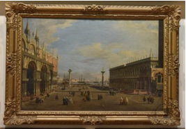

🔇 Is bhasha me is vastu ka audio abhi uplabdh nahi hai.
4. वेनिस का सान मार्को चौक

1750–1760, इटली — कैनेलेटो (जियोवानी एंटोनियो कैनाल)
“सान मार्को चौक” नामक यह तैलचित्र कैनेलेटो द्वारा बनाया गया है और संग्रहालय के यूरोपीय चित्रकला कक्ष में प्रदर्शित है। उस समय की शैली के अनुसार बने सुंदर फ्रेम में सजा यह चित्र सान मार्को जलाशय की ओर से दिखाई देने वाले सान मार्को चौक को दर्शाता है। इसमें भव्य वास्तुकला, सुंदर छोटी-छोटी आकृतियाँ और मनमोहक प्राकृतिक दृश्य का सुंदर मेल दिखाई देता है। वास्तुकला की सटीकता, सड़कों की ठोस बनावट, बारीक विवरण और परिप्रेक्ष्य की शुद्धता के कारण यह चित्र कैनेलेटो की उत्कृष्ट कृतियों में से एक माना जाता है। संभवतः इसे उन्होंने 1750 से 1760 के बीच बनाया था।
4. Piazza San Marco of Venice
1750-1760, Italy by Canaletto (Giovanni Antonio Canal)
"Piazza San Marco", oil on canvas, authored by Canaletto hangs in European paintings hall of the Museum. Richly framed in the style of the period the picture shows the 'Piazza of San Marco' on the side facing the basin of San Marco. It is a delightful piece combing magnificent architecture, dainty figures and pleasant natural scenery. In the architectural correctness solidity of the streets, minuteness of details and correctness of perspective this composition claims to be one of the best productions of Canaletto who probably painted it between 1750 and 1760.
4. ভেনিসের পিয়াৎসা সান মার্কো
১৭৫০–১৭৬০, ইতালি, ক্যানালেত্তো (জোভান্নি আন্তোনিও কানাল) কর্তৃক নির্মিত
ক্যানালেত্তোর আঁকা ক্যানভাসে তেলরঙে তৈরি 'পিয়াৎসা সান মার্কো' চিত্রকর্মটি জাদুঘরের ইউরোপীয় চিত্রশালায় প্রদর্শিত রয়েছে। তৎকালীন যুগের শৈলীতে চমৎকারভাবে ফ্রেমবন্দী এই ছবিতে সান মার্কোর অববাহিকার মুখোমুখি থাকা 'পিয়াৎসা অব সান মার্কো'-কে ফুটিয়ে তোলা হয়েছে। এটি একটি মনোমুগ্ধকর শিল্পকর্ম, যাতে অপূর্ব স্থাপত্যকলা, সূক্ষ্ম ও মার্জিত মানব অবয়ব এবং মনোরম প্রাকৃতিক দৃশ্যের এক চমৎকার সমন্বয় ঘটেছে। স্থাপত্যশৈলীর নির্ভুলতা, রাজপথের সুদৃঢ় রূপায়ণ, খুঁটিনাটি বিষয়ের সূক্ষ্মতা এবং পার্সপেক্টিভ বা পরিপ্রেক্ষিতের যথার্থতার বিচারে এই চিত্রকর্মটি ক্যানালেত্তোর অন্যতম সেরা সৃষ্টি হিসেবে দাবি রাখে, যা তিনি সম্ভবত ১৭৫০ থেকে ১৭৬০ সালের মাঝামাঝি সময়ে এঁকেছিলেন।
4. പിയാസാ സാൻ മാർക്കോ ഓഫ് വെനീസ്
1750-1760, ഇറ്റലി, കാനാലെറ്റോ (ജിയോവന്നി അന്റോണിയോ കനാൽ)
മ്യൂസിയത്തിലെ യൂറോപ്യൻ പെയിന്റിംഗ് ഹാളിൽ കനലെറ്റോ രചിച്ച "പിയാസ സാൻ മാർക്കോ" എന്ന ഓയിൽ ഓൺ ക്യാൻവാസ് പെയിന്റിംഗ് തൂക്കിയിട്ടിരിക്കുന്നു. കാലഘട്ടത്തിന്റെ ശൈലിയിൽ മനോഹരമായി ഫ്രെയിം ചെയ്തിരിക്കുന്ന ഈ ചിത്രം, സാൻ മാർക്കോയുടെ തടാകത്തിന് അഭിമുഖമായുള്ള ഭാഗത്തെ 'പിയാസ ഓഫ് സാൻ മാർക്കോ' കാണിക്കുന്നു. ഗാംഭീര്യമുള്ള വാസ്തുവിദ്യ, മനോഹരമായ രൂപങ്ങൾ, മനോഹരമായ പ്രകൃതിദൃശ്യങ്ങൾ എന്നിവ സമയോചിതമായി സംയോജിപ്പിക്കുന്ന ഒരു മനോഹരമായ സൃഷ്ടിയാണിത്. വാസ്തുവിദ്യയുടെ കൃത്യത, തെരുവുകളുടെ ദൃഢത, വിശദാംശങ്ങളുടെ സൂക്ഷ്മത, കാഴ്ചയുടെ കൃത്യത എന്നിവയാൽ കനലെറ്റോയുടെ ഏറ്റവും മികച്ച സൃഷ്ടികളിലൊന്നായി ഇത് അവകാശപ്പെടുന്നു; അദ്ദേഹം ഇത് ഒരുപക്ഷേ 1750-നും 1760-നും ഇടയിലാകാം വരച്ചത്.
4. وینس کا پیازا سان مارکو
1750–1760، اٹلی، کینالیٹو (جیووانی انتونیو کینال) کی مصوری
کینالیٹو کا یہ دل کش فن پارہ ’’پیازا سان مارکو‘‘ آئل آن کینوس ہے اور میوزیم کے یورپی مصوری کے ہال میں آویزاں ہے۔ اس میں سان مارکو کے طاس کی سمت سے نظر آنے والا مشہور «پیازا سان مارکو» نہایت خوب صورتی سے پیش کیا گیا ہے۔ تصویر میں شاندار عمارتوں، انسانی پیکروں اور دل فریب قدرتی مناظر کو اس طرح یکجا کیا گیا ہے کہ وینس کی زندگی اور اس کے حسن کی ایک جیتی جاگتی تصویر سامنے آتی ہے۔ عمارتوں اور گلیوں کی تعمیراتی جزئیات کو غیر معمولی باریک بینی اور درستگی سے پیش کیا گیا ہے۔ نقطۂ نظر کی متوازن عکاسی اور جزئیات پر گہری نظر کینالیٹو کی فنی مہارت کو نمایاں کرتی ہے۔ یہی خصوصیات اس فن پارے کو ان کی عمدہ تخلیقات میں نمایاں مقام عطا کرتی ہیں۔ غالباً یہ تصویر 1750 سے 1760 کے درمیان تخلیق کی گئی تھی۔
4. வெனிஸின் பியாசா சான் மார்க்கோ
1750–1760, இத்தாலி — கனாலெட்டோ (ஜியோவானி அன்டோனியோ கனால்)
“பியாசா சான் மார்க்கோ” என்ற இந்த எண்ணெய் வண்ண ஓவியம், கனாலெட்டோவால் வரையப்பட்டது. இது அருங்காட்சியகத்தின் ஐரோப்பிய ஓவியங்கள் கூடத்தில் தொங்கவிடப்பட்டுள்ளது. அக்காலப் பாணியில் நேர்த்தியாகச் சட்டமிடப்பட்ட இந்த ஓவியம், சான் மார்கோ நீர்த்தேக்கத்தை நோக்கிய பக்கத்தில் 'பியாஸ்ஸா ஆஃப் சான் மார்கோ'வைக் காட்டுகிறது. இது அற்புதமான கட்டிடக்கலை, நேர்த்தியான உருவங்கள் மற்றும் ரம்மியமான இயற்கைக் காட்சிகள் ஆகியவற்றை ஒன்றிணைக்கும் ஒரு மனதைக் கவரும் படைப்பாகும். கட்டிடக்கலையின் நேர்த்தி, தெருக்களின் திடத்தன்மை, விவரங்களின் நுணுக்கம் மற்றும் காட்சியமைப்பின் துல்லியம் ஆகியவற்றில், இந்த ஓவியம் கனலெட்டோவின் சிறந்த படைப்புகளில் ஒன்றாகத் திகழ்கிறது. அவர் இதை அநேகமாக 1750 மற்றும் 1760 க்கும் இடையில் வரைந்திருக்கலாம்.
4. વેનેસનું પિયાઝા સાન માર્કો
ઇ.સ. 1750–1760, ઇટાલી કાનાલેટ્ટો (જીઓવાની એન્ટોનિયો કાનાલ)
આ સુંદર તૈલચિત્ર “પિયાઝા સાન માર્કો” યુરોપિયન ચિત્રકલા ગેલેરીમાં પ્રદર્શિત કરવામાં આવ્યું છે. તે સમયની શૈલી મુજબ સુંદર રીતે સજાવેલી ફ્રેમમાં આ કૃતિ મૂકવામાં આવી છે. ચિત્રમાં સાન માર્કો બેસિન તરફથી દેખાતો સાન માર્કોનો ચોક દર્શાવવામાં આવ્યો છે. તેમાં ભવ્ય ઇમારતો, નાના માનવ આકારો અને સુંદર કુદરતી દૃશ્યનું મનોહર સંયોજન જોવા મળે છે. ચિત્રમાં ઇમારતો અને રસ્તાઓને ખૂબ જ ચોકસાઈથી દર્શાવવામાં આવ્યા છે. નાની-નાની વિગતોનું બારીક ચિત્રણ અને પરિપ્રેક્ષ્યનો યોગ્ય ઉપયોગ આ કૃતિની વિશેષતા છે. કાનાલેટ્ટોએ સંભવત આ ચિત્ર ઇ.સ. 1750થી 1760 દરમિયાન બનાવ્યું હતું.